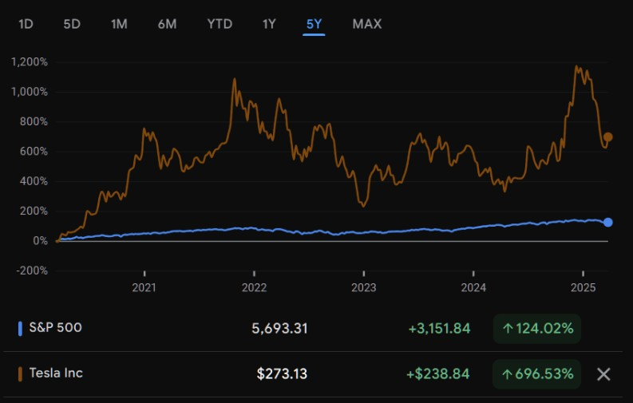

Pourquoi investir ?
Les livrets réglementés (Livret A, PEL, etc.) offrent une grande sécurité, mais leur rendement est trop faible face à l'inflation. En laissant votre argent dormir, vous perdez progressivement du pouvoir d'achat.
81% des Français possèdent un livret A, avec en moyenne 6351€ d’épargne, ce qui démontre la volonté d’épargner. Dans le contexte des
5
dernières années, voici ce qu’ils obtiennent :
2022
1.00 % (févr.-juil.) - 2.00 % (août-déc.)
5.20%
Source: Insee
Ainsi, le Livret A ne réalise non seulement aucun bénéfice, mais ne comble pas l’inflation.
Face à cette érosion silencieuse, investir devient non pas un luxe, mais une nécessité pour préserver, voire accroître son pouvoir d’achat au long terme.
Avantages & inconvénients de l’investissement financier
Accessibilité
Très accessible via une application
Très accessible dès quelques euros
Rendement
5–7 %/an sur le long terme (non garanti)
2–3 % max, très souvent inférieur à l’inflation
Risque de perte
Possible, en cas de baisse du marché
Aucune perte possible (capital garanti)
Liquidité
Très élevée : revente en 24–48 h
Totale : retrait possible à tout moment
Fiscalité
0 % après 5 ans via PEA, ou 30 % via CTO
Exonéré d’impôt (Livret A / LDDS)
Complexité
Moyenne : il faut comprendre les bases
Nulle : aucune explication nécessaire
Transparence
Totale : vous savez exactement ce que vous financez
Aucune : placement fléché, sans visibilité
Blocage du capital
Aucun : revente immédiate si nécessaire. Contrairement à l'immobilier, on peut retirer sans essuyer de pertes conséquentes
Aucun
Passivité
Très passif (surtout avec des ETF)
Totalement passif
Investir vs spéculer : quelle différence ?
La majorité des gens émettent souvent un lien entre la spéculation et l’investissement car ils ressortent du même domaine, mais les objectifs sont totalement différents.
Objectif
Objectif court terme : rechercher des gains rapides.
Objectif long terme : faire travailler son argent sur plusieurs années sans action régulière.
Exemples
Trading actif, day trading, crypto monnaies.
ETF, iShares, fonds indiciels, actions de grandes entreprises, obligations
Risque
Risque élevé avec des fluctuations importantes.
Risque faible grâce aux choix d’indices stables et à la diversification. Une évolution modérée face à la spéculation, mais bien plus sûre.
Investir en bourse en France : PEA vs Compte-Titres
Pour investir, vous avez deux options principales :
Avantages
- Les gains (plus-values et dividendes) ne sont pas imposés si vous gardez votre PEA au moins 5 ans (seuls les prélèvements sociaux de 17,2% s’appliquent).
- C’est l’un des meilleurs cadres fiscaux pour investir en bourse en France.
- Aucune limite de versement.
- Vous pouvez acheter tout ce que vous voulez : actions françaises, américaines, asiatiques, ETF internationaux, obligations, etc.
Inconvénients
- Vous ne pouvez pas investir dans toutes les actions du monde : uniquement celles d’entreprises européennes (ou certains ETF "éligibles PEA").
- Il y a un plafond de versement à 150 000 €.
- Chaque gain est taxé dès qu’il est réalisé : soit par le PFU (Prélèvement Forfaitaire Unique) de 30% (c’est-à-dire 12,8 % d'impôt + 17,2 % de prélèvements sociaux), soit en choisissant l’imposition classique (si vous êtes faiblement imposé).
Que choisir ?
Vous débutez et vous investissez pour le long terme (5 ans et plus) ?
→ Le PEA est à privilégier : il offre une excellente fiscalité et vous permet de vous constituer un portefeuille solide, surtout avec des ETF éligibles PEA (ex : MSCI World "PEA compatible").
Vous voulez investir dans des actions américaines ou
asiatiques ?
→ Il vous faut un CTO pour avoir accès aux marchés hors Europe.
Vous investissez des montants importants ou vous souhaitez utiliser les deux supports ?
→ Beaucoup de gens ouvrent les deux : un PEA pour profiter de la fiscalité, et un CTO pour la flexibilité.
💡 Vous pouvez ouvrir un compte-titres (CTO) automatiquement
en créant un compte chez un courtier. Il vous suffit d’avoir un compte bancaire SEPA relié : aucune autre démarche, aucun justificatif de revenus ou de patrimoine n’est nécessaire.
Parmi chaque type, quelles stratégies sont possibles ?
ETF
Modéré
Moyen à élevé (5–7%)
Très liquide
Faible
Débutants et intermédiaires (long terme)
Actions en direct
Élevé
Potentiellement élevé
Très liquide
Moyen à élevé
Investisseurs actifs, profils autonomes
Obligations
Faible à modéré
Faible à moyen (2–4%)
Moyenne à élevée
Faible
Investisseurs prudents ou en phase défensive
Fonds monétaires / cash management
Très faible
Très faible (<2%)
Très liquide
Très faible
Épargne de transition ou de court terme
Quels types d’actifs choisir ?
A. ETF : pour investir efficacement et passivement
Les ETF (Exchange Traded Funds) sont des fonds cotés en bourse qui répliquent un indice de marché (ex : MSCI World, S&P 500).
En un seul achat, vous êtes exposé à des centaines d’entreprises, secteurs et pays : diversification automatique.
C’est l’approche passive par excellence : pas de sélection d’actions, pas de timing, peu de
frais.
L’investissement se fait en général via des versements réguliers (DCA), sur un ou deux ETF globaux, avec une vision long terme (5 à 20 ans).
Exposition globale long terme
MSCI World
CW8 (Amundi), VWCE (Vanguard)
À partir de 50–100 €
Mensuelle
Achat régulier (DCA), 100% sur un ETF global
Exposition + émergents
MSCI ACWI / FTSE All-World
VWCE (Vanguard)
100 € et +
Mensuelle ou trimestrielle
70 % MSCI World + 30 % émergents ou full All-World
Approche Europe optimisée PEA
MSCI Europe / Euro Stoxx 50
E50, PEA Stoxx 600
50 € minimum
Mensuelle
Pour PEA uniquement, peu utile seul
Stratégie prudente
ETF obligataire
iShares Euro Gov Bond 1–3y
100 €
Mensuelle
70 % obligations / 30 % actions (si profil prudent)
Stratégie dividendes réguliers
S&P Dividend Aristocrats
SPYD, Ishares Div Aristocrats
100–200 €
Trimestrielle
Pour revenus passifs, à réinvestir ou encaisser
MSCI World Index
Source : ABC Bourse
Le risque de perte diminue fortement avec la durée d’investissement. À court terme (< 3 ans), les marchés peuvent fluctuer. Mais sur 10 ans et plus, les ETF globaux ont toujours été positifs historiquement, grâce :
- à la diversification interne de l’indice,
- au renouvellement naturel des entreprises cotées.
→ Le temps est le principal facteur de sécurité.
B. Actions en direct : pour apprendre ou viser un rendement élevé
Acheter des actions individuelles, c’est investir dans une entreprise spécifique, avec ses performances, ses risques et ses perspectives.
Contrairement aux ETF, le risque n’est pas mutualisé. Le potentiel de rendement est plus élevé, mais l’exposition à la volatilité et aux erreurs de sélection est maximale.
C’est un excellent outil pour se former au fonctionnement des marchés et des entreprises, ou chercher une performance ciblée (dividendes, croissance…), à condition de rester prudent sur les montants engagés.
Risques spécifiques et gestion stratégique
- Risque d’erreur humaine : mauvaise sélection, achat au mauvais moment, revente dans la panique.
- Risque sectoriel ou géographique : une crise peut affecter tout un segment (ex : tech ou énergie).
- Risque de concentration : mettre 500 € sur une seule valeur peut effacer des mois d’épargne en un jour.
Stratégie recommandée
- Diversifiez manuellement si vous sortez des ETF.
- Jamais plus de 5 % de votre portefeuille total sur une seule action.
- Une stratégie "core ETF + satellite actions" est souvent préférable.
Choisissez une logique claire :
- Dividendes stables : revenus réguliers, volatilité modérée
- Croissance : gains potentiels élevés, mais fort drawdown possible
- Apprentissage : petites sommes sur des valeurs que vous comprenez
- Lisez les résultats trimestriels, la dette, la rentabilité, le PER
- Comprenez ce que fait l’entreprise et dans quel secteur elle évolue
- Évitez les “coups” ou les valeurs à la mode sans conviction réelle
- Pour une analyse plus poussée, les brokers publient tous des résultats financiers détaillés, mais vous pouvez aussi utiliser des outils d’analyse comme TradingView.
Apprentissage / curiosité
Grandes capitalisations
LVMH, Airbus, Total Energies
À partir de 100–200 €
Acheter 1 ou 2 actions, suivre l’actu, sans surinvestir
Rendement long terme
Actions de croissance
Apple, ASML, Nvidia
300 € et +
Diversification manuelle, ou en complément d’ETF
Rendement régulier
Actions à dividende stable
Unilever, Vinci, Sanofi
200 € et +
Encaissement des dividendes ou réinvestissement
Stratégie offensive sectorielle
Tech, santé, clean energy
Tesla, Moderna, Enphase
Variable, prudence
Pas plus de 5–10 % du portefeuille total

Source : Google Finance
Contrairement aux ETF, une action individuelle présente une volatilité bien plus élevée, mais c’est aussi ce qui lui permet, dans certains cas, de délivrer des performances nettement supérieures. À condition de bien choisir, d’être patient et de supporter les fluctuations, l’investissement direct en action peut surperformer les indices, mais au prix
d’un risque plus fort et donc nécessitant un suivi plus fréquent.
💡 L’investissement en actions individuelles est le plus risqué mais aussi le plus formateur.
À réserver soit aux profils expérimentés, soit à ceux qui veulent apprendre sans mettre en danger leur capital.
C. Obligations : pour stabiliser un portefeuille ou investir prudemment
Les obligations sont des titres de créance : vous prêtez à un État ou une entreprise en échange d’un rendement fixe. Elles sont moins volatiles que les actions, mais offrent aussi des rendements plus limités, sauf cas particuliers.
Utilisées en complément d’un portefeuille actions, elles permettent de réduire la volatilité globale (surtout en
périodes d’incertitude), ou de garer son capital temporairement sans l’exposer à de fortes variations.
Sécurité + rendement modéré
Obligations d’État à court terme
iShares € Government 1–3y
100 € et +
Idéal pour phase d’attente ou épargne sécurisée
Diversification conservatrice
Obligations monde / mix
Lyxor Global Aggregate Bond
100 € et +
Combiner avec ETF actions (ex : 60 % actions, 40 % obligs)
Revenu fixe (rendement)
Obligations d’entreprise
iShares € Corporate Bond
200 € et +
Plus risqué que l’État, mais meilleurs rendements
💡 En phase de baisse des taux, les obligations à taux fixe peuvent aussi prendre de la valeur.
Guide : se lancer pas à pas
1. Choix du courtier (Broker en anglais)
- Nous prenons l'exemple de Trade Republic en raison de sa simplicité et de son confort d’utilisation.
- Pour ce qui est des frais, la la carte bancaire gratuite, retrait en cash gratuit inférieur à 100€, au delà 1€/retrait.
- Les seuls frais d’investissement sont les “Frais externes par transaction ponctuelle” : 1€ à chaque investissement non-régulier (donc privilégiez un investissement régulier type mensuel ou alors de gros investissements ponctuels).
- Il s’agit d’un courtier conséquent, et fiable de par son importance dans le marché des courtiers européens.
2. Ouverture du compte
Suivez les étapes d’installation depuis l’application mobile ou le navigateur sur ordinateur
Vous aurez besoin de :
- Numéro de téléphone
- Justificatif de domicile
- Être majeur
- Carte d’identité ou Passeport
- Un compte bancaire SEPA (compte bancaire classique au sein de l’Union Européenne)
- Vous êtes résident permanent et assujetti à l’impôt dans le pays dans lequel vous vous inscrivez
- Une adresse fiscale ainsi qu’un numéro d'identification fiscale (NIF)
3. Investir
Une fois tout en ordre, vous pouvez (durant les heures d’ouverture de la bourse, soit de 7:30 à 23:00 CET du lundi au vendredi), parmi votre liste d’indices préalablement choisis, investir dans l’ETF que vous souhaitez :
- Cliquez sur Recherche
- Choisir l’action, ETF, ou obligation de votre choix
- Cliquer sur Epargner
- Choisir le montant, puis la fréquence de votre épargne (Mensuelle, Hebdomadaire…)
- Confirmer
- Au besoin, vérifier depuis l’application l’évolution de vos valeurs.
Si la valeur de votre investissement baisse, vous pouvez revendre à tout moment.
Mais rappelez-vous : le but ici n’est pas de “jouer” sur les variations à court terme, mais de laisser le temps faire son effet. En général, on évite de vendre en période de baisse, sauf si on a une bonne raison ou un besoin urgent.
Étude de cas : Comparaison sur 5 ans
Imaginons que vous investissiez 100 € par mois pendant 5 ans, soit un total de 6 000 €.
Vous avez deux options : Placer votre argent sur un Livret A, sécurisé mais peu rémunérateur, ou l’investir. Nous allons prendre le cas d’un ETF mondial, pour viser un rendement très fiable et raisonnable à long terme. Si on se réfère aux valeurs de 2020 à
2024 incluses, voici ce que cela donnerait :
Montant total investi
6 000 €
6 000 €
Valeur finale (nominale)
6 159,41 €
7 119,59 €
Montant nécessaire pour suivre l'inflation (+14,93% en 5 ans)
527.56 €
527.56 €
Gain/Perte réelle
–368,15 € (–5,64 %)
+592,03 € (+9,07 %)
- Le Livret A ne permet pas de suivre l’inflation malgré sa sécurité : vous perdez 368 € de valeur réelle sur 5 ans.
- L’ETF vous fait gagner du pouvoir d’achat réel : +592 €, en plus de protéger votre épargne de l’inflation.
À effort d’épargne égal, l’investissement en ETF donne près de 1 000 € de différence sur 5 ans.
Conclusion
Ce guide avait pour objectif de poser les bases d’un raisonnement simple mais fondamental : face à l’inflation, l’épargne classique ne suffit plus.
Les livrets réglementés, comme le Livret A, offrent une sécurité indiscutable, mais ils ne protègent plus le pouvoir d’achat des ménages. Même avec une épargne régulière, les rendements sont structurellement inférieurs à l’évolution des prix. Résultat : une perte lente mais réelle de valeur.
À l’inverse, l’investissement progressif dans des produits financiers comme les ETF larges et diversifiés permet :
- de mieux résister à l’érosion monétaire,
- de conserver une liquidité (contrairement à l’immobilier),
- et de maîtriser son exposition au risque, à condition d’avoir une approche long terme.
Il ne s’agit pas de "jouer en bourse", ni de spéculer. Il s’agit simplement de comprendre que l’épargne passive n’est plus suffisante, et que des outils simples, accessibles à tous, existent pour y répondre.